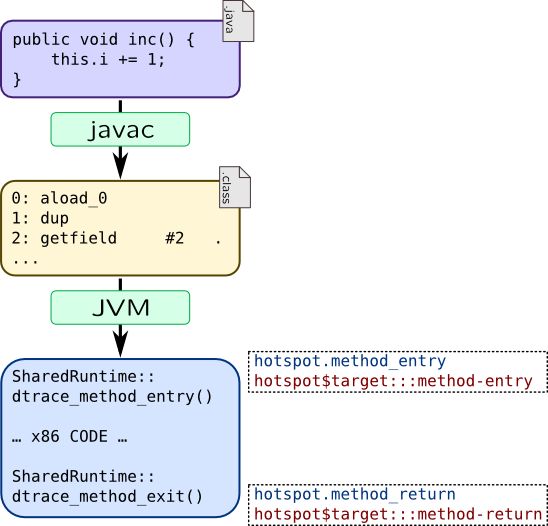

Java Virtual Machine
DTrace and SystemTap are intended to trace applications written in native languages like C or C++ and dependent on compiler ABIs. If application requires virtual machine (in case it is interpreted or translated on-the-fly), virtual machine has to implement USDT probes so it can be traceable by DTrace or SystemTap. For example Zend PHP keeps call arguments in a global object, so you have to access that object to get arguments values instead of using arg0-argN syntax.
Same works for Java Virtual Machine. Oracle's implementation of JVM, called Hotspot and OpenJDK, which based on Hotspot support DTrace since version 1.6. It is available through hotspot and hotspot_jni providers. Latter is intended for tracing of Java Native Interface, so we leave it out of our scope.
By default hotspot provider allows to trace only rare events, such as class loading, starting and stopping threads, VM-wide and GC-wide events and JIT compiler events. That was done to reduce overheads of USDT probes. For example, to trace methods, compiler has to inject two calls into produced code:

To enable additional probes, use following java command line options:
-
-XX:+DTraceMethodProbes–- enables function boundary tracing for methids -
-XX:+DTraceAllocProbes–- enables tracing of object allocation and deallocation -
-XX:+DTraceMonitorProbes–- enables object monitors tracing -
-XX:+ExtendedDTraceProbes–- enables all of events listed above
These options can be set dynamically for running virtual machine using jinfo tool.
Tracing provider is implemented in shared library libjvm.so which is dynamically loaded using dlopen() call. Due to limitations of pid$$ provider we mentioned before, dtrace cannot use hotspot$target syntax directly:
# dtrace -c 'java Test' -n 'hotspot$target:::' dtrace: invalid probe specifier hotspot$target:::: probe description hotspot3662::: does not match any probes
To launch tracing, use helper script dtrace_helper.d: it stops execution of JVM (using stop() destructive action) when it loads libjvm.so through dlopen() and restarts execution of JVM only when tracing script is up and running. Moreover, starting with JDK7, Solaris builds of JDK will use -xlazyload linker flag. Due to that, JVM won't register probes automatically until dtrace is attached to it explicitly with -p options so hotspot probes will be missing from dtrace -l outputs. -p option will work as expected:
# dtrace -p 3682 -n 'hotspot$target:::' dtrace: description 'hotspot$target:::' matched 66 probes
-Z option can also be helpful.
JDK shipped in openjdk packages in RHEL-like operating systems supports hotspot tracing too. SystemTap provides its probes through hotspot tapset which doesn't have such limitations and can be used directly:
# stap -e 'probe hotspot.* { println(pn()); }' -c 'java Test'
Let's write small program, called Greeter which will write "Hello, DTrace" from four threads. Its implementation is based on Greeter from Solaris Internals wiki with small difference: Greeting.greet() method uses synchronized keyword so it will use monitor.
public class Greeting {
public synchronized void greet() {
System.out.println("Hello, DTrace!");
}
}
class GreetingThread extends Thread {
Greeting greeting;
GreetingThread(Greeting greeting) {
this.greeting = greeting;
super.setDaemon(true);
}
public void run() {
while(true) {
greeting.greet();
try {
Thread.sleep(1000);
} catch (InterruptedException e) {
}
}
}
}
public class Greeter {
public static void main(String[] args) {
Greeting greeting = new Greeting();
GreetingThread threads[] = new GreetingThread[4];
for(int i = 0; i < 4; ++i) {
threads[i] = new GreetingThread(greeting);
threads[i].start();
}
for(int i = 0; i < 4; ++i) {
try {
threads[i].join();
}
catch(InterruptedException ie) {
}
}
}
}
#!/usr/bin/stap
probe hotspot.class_loaded
{
printf("%12s [???] %s\n", name, class);
}
probe hotspot.method_entry, hotspot.method_return
{
printf("%12s [%3d] %s.%s\n", name, thread_id, class, method);
}
probe hotspot.thread_start, hotspot.thread_stop
{
printf("%12s [%3d] %s\n", name, id, thread_name);
}
probe hotspot.monitor_contended_enter, hotspot.monitor_contended_exit
{
printf("%12s [%3d] %s\n", name, thread_id, class);
}
dtrace_helper.d or called with -Z option:
#!/usr/sbin/dtrace -qs
#pragma D option switchrate=10hz
hotspot$target:::class-loaded
{
printf("%12s [???] %s\n", probename, stringof(copyin(arg0, arg1)));
}
hotspot$target:::method-entry,
hotspot$target:::method-return
{
printf("%12s [%3d] %s.%s\n", probename, arg0,
stringof(copyin(arg1, arg2)),
stringof(copyin(arg3, arg4)));
}
hotspot$target:::thread-start,
hotspot$target:::thread-stop
{
printf("%12s [%3d] %s\n", probename, arg3,
stringof(copyin(arg0, arg1)));
}
hotspot$target:::monitor-contended-enter,
hotspot$target:::monitor-contended-exit
{
printf("%12s [%3d] %s\n", probename, arg0,
stringof(copyin(arg2, arg3)));
}
copyin function to copy strings from userspace instead of copyinstr. That is because hotspot probes pass strings as non-null-terminated. Due to that, it will use additional argument to pass string length.
Here are examples of this script outputs:
class-loaded [???] Test ... class-loaded [???] Greeting... class-loaded [???] GreetingThread ... thread-start [ 14] Thread-1 method-entry [ 9] GreetingThread.run method-entry [ 9] Greeting.greet ... monitor-contended-exit [ 8] Greeting method-return [ 8] Greeting.greet method-entry [ 8] java/lang/Thread.sleep method-return [ 9] java/lang/Thread.sleep monitor-contended-enter [ 9] Greeting method-entry [ 9] Greeting.greet method-entry [ 9] java/io/PrintStream.println
You can see that when thread leaves Thread.sleep() method, it acquires monitor of Greeting object, calls Greeting.greet() method which will call PrintStream.println() method to output line.
Here are list of probes provided by JVM in hotspot$target DTrace provider and hotspot tapset:
| Action | DTrace | SystemTap |
| JVM | ||
| Start |
vm-init-begin vm-init-end |
hotspot.vm_init_begin hotspot.vm_init_end |
| Shutdown |
vm-shutdown |
hotspot.vm_shutdown |
| Threads | ||
| Start |
thread-start
|
hotspot.thread_start
|
| Stop |
thread-stop Arguments are same as for thread-start |
hotspot.thread_stop Arguments are same as for hotspot.thread_start |
| Methods | ||
| Call |
method-entry
|
hotspot.method_entry
|
| Return |
method-return
Arguments are same as for method-entry
hotspot.method_return |
Arguments are same as for hotspot.method_entry |
| Class loader | ||
| Load |
class-loaded
|
hotspot.class_loaded
|
| Monitors (locks) | ||
| Attempt to acquire |
monitor-contended-enter
arg0 — Java thread id
arg1 — unique monitor id
arg2:arg3 — class name |
hotspot.monitor_contended_enter
thread_id — Java thread id
id — unique monitor id
class — class name |
| Acquire |
monitor-contended-entered Arguments are same as for monitor-contended-enter |
hotspot.monitor_contended_entered Arguments are same as for monitor_contended_enter |
| Release |
monitor-contended-exit Arguments are same as for monitor-contended-enter |
hotspot.monitor_contended_exit Arguments are same as for monitor_contended_enter |
| Monitors (events) | ||
Entering .wait() |
monitor-wait Arguments are same as for monitor-contended-enter
with one addition: arg4 keeps timeout |
hotspot.monitor_wait Arguments are same as for monitor_contended_enter
with one addition: timeout variable keeps timeout |
Leaving .wait() |
monitor-waited Arguments are same as for monitor-contended-enter |
hotspot.monitor_waited Arguments are same as for monitor_contended_enter |
.notify() |
monitor-notify Arguments are same as for monitor-contended-enter |
hotspot.monitor_notify Arguments are same as for monitor_contended_enter |
.notifyAll() |
monitor-notifyAll Arguments are same as for monitor-contended-enter |
hotspot.monitor_notifyAll Arguments are same as for monitor_contended_enter |
| Allocator and garbage collector | ||
| GC cycle has been started |
gc-begin
|
hotspot.gc_begin
|
| GC cycle has been finished |
gc-end |
hotspot.gc_end |
| Garbage collection is initiated for memory pool |
mem-pool-gc-begin
|
hotspot.mem_pool_gc_begin
|
| Garbage collection is finished in a memory pool |
mem-pool-gc-end
Arguments are same as for mem-pool-gc-begin |
hotspot.mem_pool_gc_end
Arguments are same as for hotspot.mem_pool_gc_begin |
| JIT compiler | ||
| Start of method compilation |
method-compile-begin
arg0:arg1 — compiler name
arg2:arg3 — class name
arg4:arg5 — method name
arg6:arg7 — method signature |
hotspot.method_compile_begin
compiler — compiler name
class — class name
method — method name
sig — method signature |
| Ending of method compilation |
method-compile-end Arguments are same as for method-compile-begin.
with one addition: arg8 keeps compilation result |
hotspot.method_compile_end Arguments are same as for hotspot.method_compile_begin.
with one addition: $arg9 keeps compilation result |
| Load of compiled method |
compiled-method-load
|
hotspot.compiled_method_load
|
| Unload of compiled method |
compiled-method-unload
|
hotspot.compiled_method_unload
|
In addition to provided probe arguments, SystemTap will supply name which will contain probe name, and probestr which keeps string with pre-formatted probe arguments. There are also several probes that are not documented: such as class-initialization-* and thread probes: thread-sleep-*, thread-yield.
SystemTap and DTrace can also collect backtraces of a running Java thread. DTrace provide jstack() function for that:
# dtrace -n '
syscall::write:entry
/ execname == "java" /
{ jstack(); }'
SystemTap needs to gather some information about VM to build stack traces correctly, so it needs to bind to probe hotspot.vm_init_end, so print_jstack() will work only if you run SystemTap with -c option:
# stap -e '
probe syscall.write {
if(pid() == target())
print_jstack();
} ' -c 'java Test'
However, you can alter source code of jstack tapset to use other global events and use jstack() on live processes.
Warning
There is a bug in JDK: JDK-7187999: dtrace jstack action is broken. Due to it, jstack() won't work for Java7 in Solaris 11. One of workarounds is to try to seek for available probes in a process:
# dtrace -P fooJava-PIDThat attempt will fail, but it will lead DTrace to extract required helper functions from Java process.
JSDT
You could notice that we can't extract method's arguments in method probes like we did it in other places via args array. That complicates Java application tracing. As you can remember from USDT description, in DTrace applications can register their probes within DTrace. This is also true for Java applications which can provide Java Statically Defined Tracing probes (JSDT). It is supported only in DTrace and only in BSD or Solaris.
JSDT is implemented in packages com.sun.tracing and sun.tracing. Each provider should be a class which implements com.sun.tracing.Provider interface, while each method of this class will be a probe. Reimplement our greeting example with JSDT support:
public class Greeting {
GreetingProvider provider;
public Greeting(GreetingProvider provider) {
this.provider = provider;
}
public void greet(int greetingId) {
provider.greetingStart(greetingId);
System.out.println("Hello DTrace!");
provider.greetingEnd(greetingId);
}
}
import com.sun.tracing.Provider;
public interface GreetingProvider extends Provider {
public void greetingStart(int greetingId);
public void greetingEnd(int greetingId);
}
import com.sun.tracing.*;
public class JSDT {
static public void main(String[] args) {
ProviderFactory providerFactory =
new sun.tracing.dtrace.DTraceProviderFactory();
GreetingProvider greetingProvider = (GreetingProvider)
providerFactory.createProvider(GreetingProvider.class);
Greeting greeter = new Greeting(greetingProvider);
for(int id = 0; id < 100; ++id) {
greeter.greet(id);
try { Thread.sleep(500); }
catch(InterruptedException ie) {}
}
greetingProvider.dispose();
}
}
sun.tracing is treated as "closed", so you will need to pass an option to javac to compile JSDT:
$ javac -XDignore.symbol.file JSDT.java
You can see that our provider was registered within DTrace when we start JSDT example and we can trace it:
root@sol11:~/java1/hs1# dtrace -l | grep GreetingProvider
69255 GreetingProvider3976 java_tracing unspecified greetingStart
69256 GreetingProvider3976 java_tracing unspecified greetingEnd
root@sol11:~/java1/hs1# dtrace -n 'greetingStart { trace(arg0); }'
dtrace: description 'greetingStart ' matched 1 probe
CPU ID FUNCTION:NAME
0 69255 unspecified:greetingStart 61
P.S.: Of course, DTrace and SystemTap are not the only option to trace Java. It provides JVMTI interface since Java 6 which allows to instrument Java applications as well. Most famous implementation of JVMTI is BTrace.